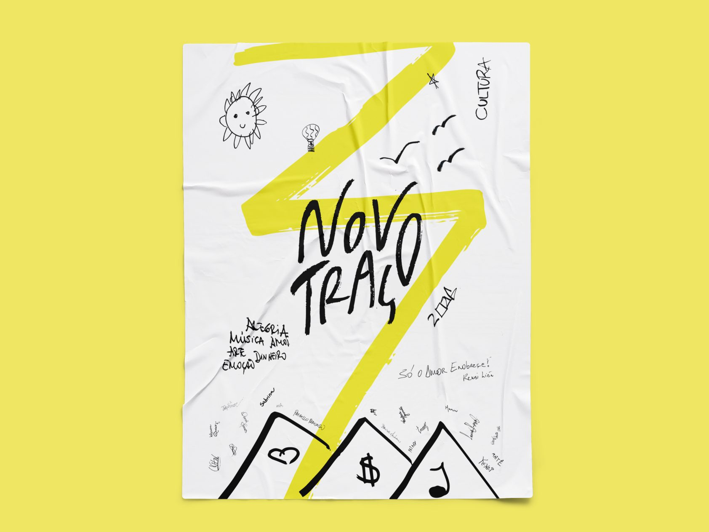
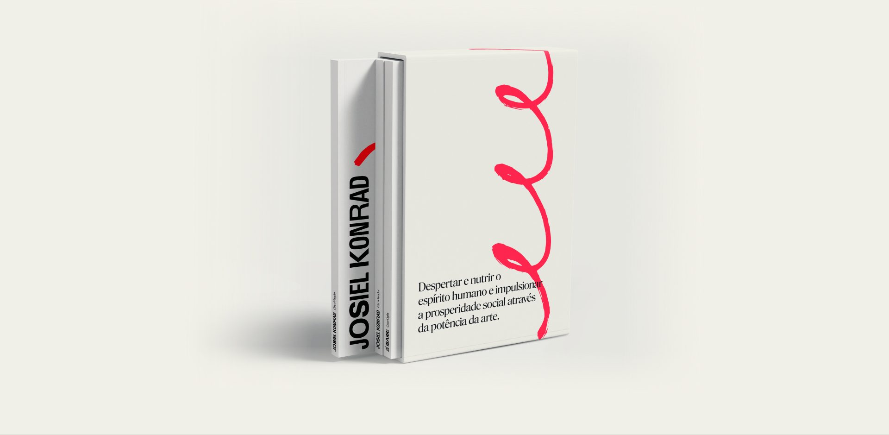
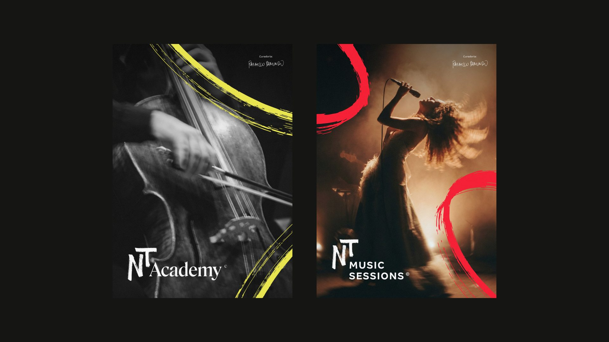
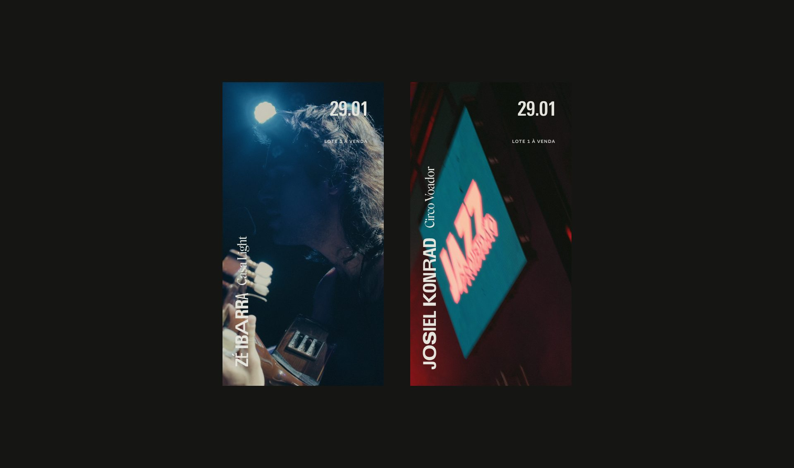
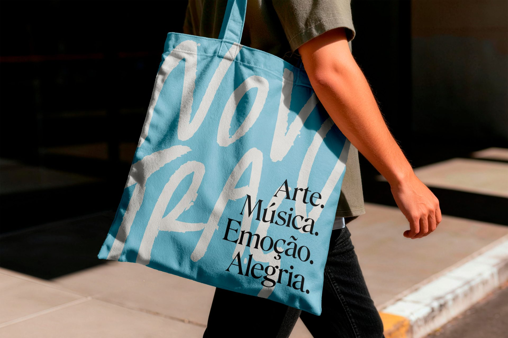

Novo Traço
A parent brand for an art and music group: Brazilian expressiveness translated into stroke, color and contrast.
- Client
- Novo Traço
- Year
- 2025 — 2026
- Role
- Art direction
- Scope
- Visual identity, brand system, sub-brands, guidelines and digital
Context and challenge
Novo Traço is an art and culture group that brings together education, live music and music production: NT Academy, NT Music Sessions, Jazz Proibidão, Orquestra Novo Traço and the record label NT Records. Its purpose is to awaken and nourish the human spirit and drive social prosperity through the power of art.
The challenge was to build a system that would bring very different projects under one voice without erasing each one's personality: from the classical world of the orchestra to the urban edge of the record label.
Concept
Contrast and expressiveness. The identity is born from expressiveness as a vital language of the Brazilian people, for whom art is a tool for survival, communication and identity. Its contrasts, between classical and popular, tradition and rupture, pain and celebration, reflect the cultural mix that creates emotional impact and real connection.
Handmade
The brand's strokes were not drawn on a computer. They came from a workshop with the Novo Traço team in Rio de Janeiro: each person drew with markers, brushes and ink, and that material became the graphic foundation of the identity. That is what guarantees a genuine expressiveness, impossible to fake digitally, and makes the brand something built by the very people who live it.

Colors and strokes
Vivid colors work as a direct language, reflecting the intensity that runs through Brazil's music, art and streets. The strokes are made by hand, with ink, and bring a genuine expressiveness to the identity that is impossible to fake digitally.
The palette is broad on purpose: each sub-brand and project picks its colors from it and gets a stroke of its own, which gives the system variety without breaking its unity.
-
Cloud Dancer
- HEX
- #F0EFEB
- RGB
- 240 239 235
- Pantone
- 11-4201 TCX
-
My Soul
- HEX
- #020305
- RGB
- 2 3 5
- Pantone
- 19-4010 TCX
-
Orange Tiger
- HEX
- #F96714
- RGB
- 249 103 20
- Pantone
- 16-1358 TCX
-
Red Pink
- HEX
- #FB2A54
- RGB
- 251 42 84
-
Tropical Breeze
- HEX
- #87CDE7
- RGB
- 135 205 231
- Pantone
- 13-4307 TCX
-
First Tree
- HEX
- #00733C
- RGB
- 0 115 60
- Pantone
- 18-6031 TCX
-
Illuminating
- HEX
- #F6EA60
- RGB
- 246 234 96
- Pantone
- 13-0647 TCX
Typography
A typographic palette gives each area of communication its own voice. Univers, with weights from Ultra Light to Extra Black, allows mixing weights within the same word. Roslindale Narrow brings editorial refinement to headlines, and Margem takes on body copy and small details.




Results
Today the system supports all of the group's communication, from events to digital, and every new project is born within it. As art director, I lead a team of three designers and develop the manuals and guidelines that keep the brand consistent across teams and partners.